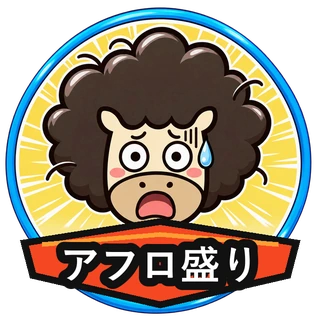
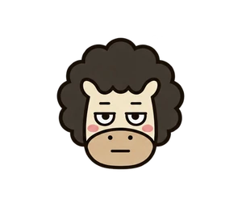

AFRO
Horse
SOUND
EXIT
CHICKEN RACE

どこまで盛れる？
自己ベスト
—
スタート
説明
あそびかた
画面を
押しているあいだ
アフロがふくらむ
手を離すと、そこまでの大きさが点になる。
大きいほど高得点
ただしアフロには限界がある。超えると
爆発して0点
ふるえ出してカチカチ鳴ったら、限界が近い
どこまで行けるかは
キャラで決まっている
。ブルマはようけ盛れるがふるえてからが短い。アフワははよ爆発するが、ふるえてからがわりと長い
5回やって合計点が記録。
さいごの1回だけ2倍
とじる
TURN
1/5
THIS
0
TOTAL
0
はちきれそう！

押して盛る／離して確定